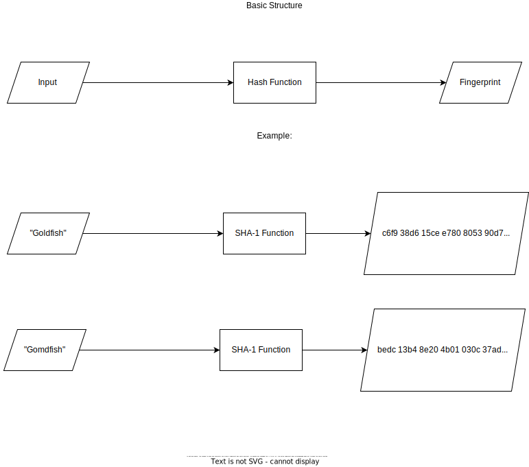

Fingerprinting and the Security and Exploitation of HTTPS
Neeraj Gogate
Allen STEAM Center
Computer Science III
David Ben-Yaakov
In the internet’s infancy, the majority of the web traffic was composed of people simply looking for information or using the internet as a novelty device. Because of this most websites would use a HTTP (HyperText Transfer Protocol) connection, which would allow for communication between a server and a web browser, but would not encrypt the connection in any way as it was unnecessary at the time. However, as the internet ballooned in size, it started to take up new uses, such as connecting to a bank account or medical records, things that people would not want to be public. This caused there to be an increase in the amount of malicious attacks on users, most commonly the man in the middle attack (MITM).
A MITM attack is whenever some form of attacker drops themselves in the middle of a connection between a user and an application. This allows the attacker to steal information such as login information, bank information, and medical records. They would mostly do this through two main steps: interception and decryption. The attacker would first intercept the user traffic using the network connection before it manages to reach the server. This would be done easily through providing free malicious WiFi hotspots in an area where they would be expected, such as creating a WiFi connection called “McDonald’s Guest” in a McDonald’s. They could also do this by IP spoofing, changing packet headers in IP addresses through applications, ARP spoofing, linking the MAC address of an attack address with a user’s IP using illegitimate ARP messages, or DNS spoofing where attackers alter a website’s address record. After using one of these methods, the attacker would have to decrypt the web traffic without tipping off the website. This is done through a variety of methods, the most common being SSL stripping and SSL hijacking. SSL hijacking is when an attacker forges authentication keys and sends them to the user and application, while SSL stripping is an attacker sending an insecure version of the application’s site to the user, so that they can view it directly (Shabi). This type of attacking creates the need for more security in web applications, and thus the HTTPS connection was born.
HTTPS connections enhance the protection of users more when compared to the HTTP connection. The “S” in HTTPS stands for secure, relaying how HTTPS uses modern encryption methods which are as close to impossible as can be to break. These websites use Certificate Authorities in their verification process. Certificate Authorities are organizations that verify whether a web page has secure infrastructure, and authenticates that the websites don't have any problems. They then issue certificates based on these, which are stored in a database. Web browsers then use this database to check the certificate the site provided against their own certificate. In the early stages of the internet, these were not easily producible, so most websites would use them to secure data such as login credentials to safeguard them. However over time, as the technology to create them got better and better, they were more feasible, and a majority of popular websites use them today. (Fingerprints) However, while these connections are supposed to keep the connection limited to just the user and web server, this is no longer the case thanks to the creation of HTTPS Proxy Appliances.
HTTPS Proxy Appliances act as a way for organizations such as corporations or schools to act almost as a man in the middle and circumvent the privacy provided by HTTPS, giving them access to any kind of information that they would want. They do this by taking advantage of the HTTPS certificate system, which requires a website to provide a certificate to the web browser to inspect. However, whenever a HTTPS Proxy certificate is used in a school or workplace, the organization uses a fraudulent certificate. They sign the certificate using a fake Certificate Authority that was previously installed to the computer or browser. This certificate is infallible from a technical perspective, so neither the browser nor the user is able to tell the difference between the real and fake certificate. Thus, all of the information is sent to the Proxy Appliance instead of the remote web server, letting the organization decrypt and log all of the material sent by the user. So the user has absolutely no privacy in this scenario (Fingerprints). Despite this, there is a way to detect whether the certificate is legitimate.
While there is no technical way to currently prevent an SSL interception, hashes can be created to look over and verify an SSL certificate, thus detecting an SSL interception. These hashes are complex algorithms which process the SSL certificate to see if it is correct. They can detect minor changes in a certificate change, even down to one bit, as the hash will often change drastically if such a change is made(pictured below). These hashes today use the SHA1(Secure Hashing Algorithm 1) hashing algorithm. These hashes create something called a fingerprint, which allows us to see if there is an SSL interception, as if the SSL was intercepted we can see that the fingerprint is different even if the website looks the same (Fingerprints). Modern browsers such as Google Chrome and Firefox will also allow us to see this, as they will display a “green” indication verifying that a website's connection is legitimate.
Despite this rigorous testing with hashes, a false-positive test can happen. This would occur whenever a certificate was considered to be spoofed, when it was actually the true valid certificate. On the other hand a false negative could happen and cause the spoofed certificate to be thought of as a valid certificate, when it is clearly not. This would only happen if there was some sort of problem with the browser not receiving intercepts properly, causing the browser to think everything is safe when it's not (Dormann).
The biggest problem with spoofing a certificate isn’t necessarily the act itself, but rather the philosophy behind it. Spoofing a certificate can actually prove rather useful, as it brings to attention the problem of being able to exploit and destroy the security that comes with HTTPS connections. Where it gets problematic, however, is the act of doing it in an attempt to monitor someone else’s activities, as that action flies in the face of the original intent behind HTTPS connections, which was to protect privacy. Monitoring someone’s behavior without their consent (which most forms of this type of spoofing are) is a direct violation of someone’s privacy, if not done with some reasonable form of probable cause. It allows people who shouldn’t be seeing certain things to see them with no form of restriction. An example of this can best be seen in the hypothetical situation of a student questioning their religion living on a rather religious college’s campus. If the student is living on the campus and using computers and WiFi connections at the school, the school would presumably be able to see with a spoofed certificate everything that the student types. If the student appears to make searches that relate to the questioning of his faith, the school would have direct access to those searches and would be able to easily attempt to question them and potentially remove them from classes, despite the fact that the student was trying to settle the matter of their faith personally.
References
Dormann, W. (2015, March 12). The Risks of SSL Inspection. SEI Blog. Retrieved August 25, 2022, from https://insights.sei.cmu.edu/blog/the-risks-of-ssl-inspection/
Fingerprints. (n.d.). Gibson Research Corporation. Retrieved August 25, 2022, from https://www.grc.com/x/URL_Error.htm#top
Shabi, T., Hasson, E., Gravier, O., Hasson, E., Hasson, E., Avital, N., S.L., Lynch, B., & Lynch, B. (2019, December 29). What is MITM (Man in the Middle) Attack | Imperva. Learning Center. Retrieved August 25, 2022, from https://www.imperva.com/learn/application-security/man-in-the-middle-attack-mitm/